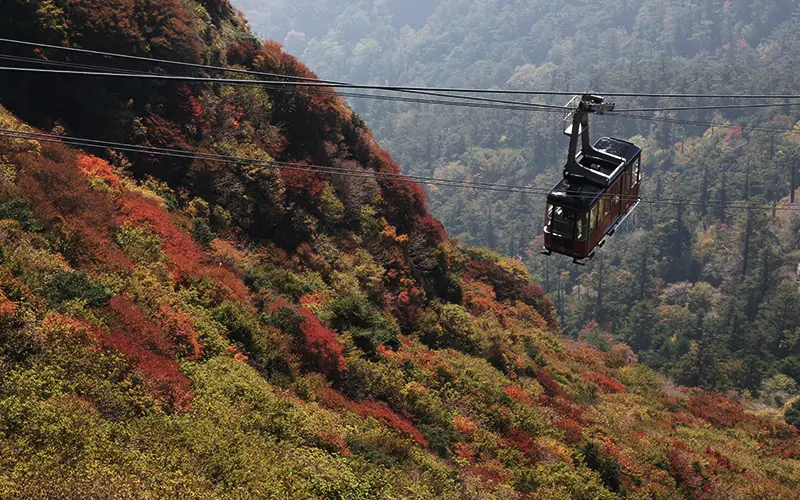
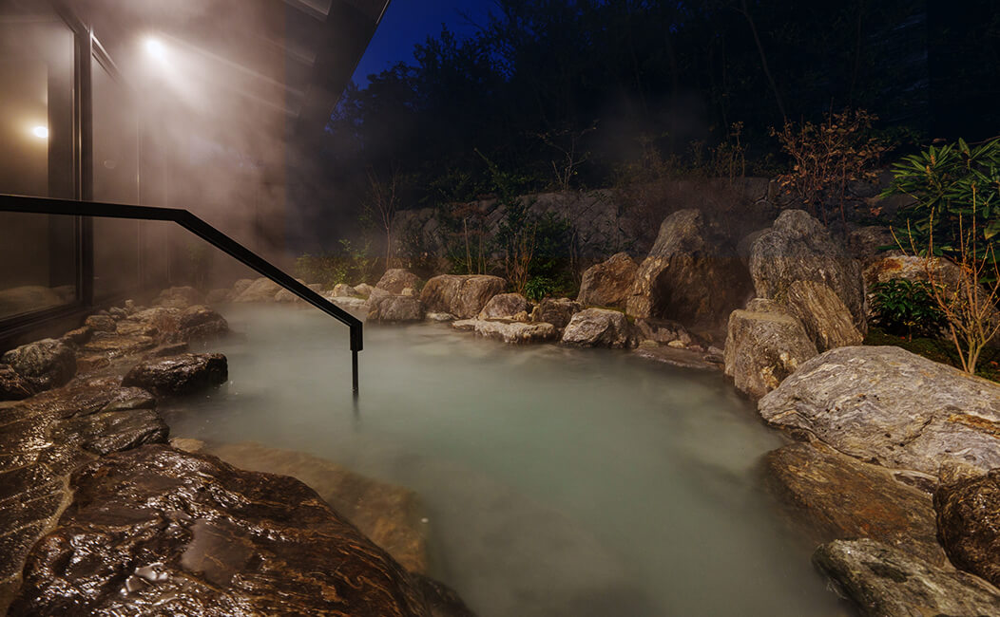
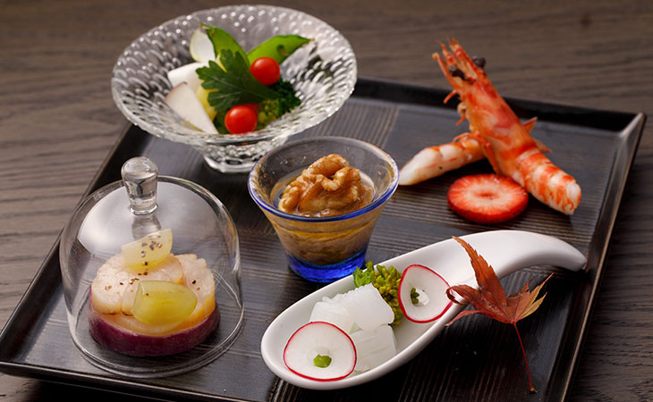

～雲仙の豊かな四季が織り成すラグジュアリーステイ～
雲仙温泉 雲仙宮崎旅館 (長崎)
雲仙は、日本で最初の国立公園に認定された豊かな自然と、
効能豊かな硫黄泉を持つ。
こちらの旅館では、どの部屋からもその自然を眺めることができる。
車で雲仙ロープウエー乗り場まで行くと、四季折々の風景を間近で体感できる。
温泉は大叫喚地獄より引湯した源泉掛流し温泉。
白濁した美肌の湯として名高く、これまた露天も入れて3つ浴槽がある。
貸切風呂やサウナ・水風呂なんでもござれ。
さらに食事に関しても大自然の幸を贅沢に。
料理の盛り付けには、長崎県の波佐見焼や三川内焼、
佐賀県の有田焼など九州の器を中心に使用しており見た目鮮やか。
都内からのアクセスは長崎空港から車が便利。
「とにかく丁寧におもてなしを受けたい！」ならココ。